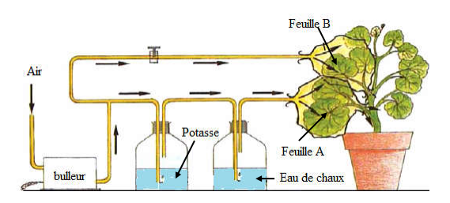

Devoir de Contrôle N°2 de Sciences de la Vie et de la Terre
Lycée Mahmoud El Messadi Nabeul
Classe : 1ère S - Professeur : Mzid Mourad
Année : 2014/2015
Instructions générales
- Répondez précisément aux questions posées.
- Soignez la présentation et l'orthographe de vos réponses.
- Les schémas doivent être clairs et légendés.
I/ Définissez les notions suivantes : (4 points)
• La photosynthèse :
• Fertilisation minérale du sol :
• Fertilisation organique du sol :
• Les serres :
II/ Corriger les affirmations suivantes : (5 points)
1- La photosynthèse est un phénomène qui caractérise tout les êtres vivants.
2- La plante absorbe le dioxygène et dégage le dioxyde de carbone par photosynthèse.
3- L'alcool bouillant permet de tuer les cellules des feuilles avant la recherche de l'amidon.
4- La plante verte absorbe la matière organique par ces racines.
5- Les lipides se colorent en bleu en présence de la liqueur de Fehling à chaud.
III/ Compléter le tableau suivant : (3 points)
| Substance organique recherchée | Réactif utilisé | Résultat attendu |
|---|---|---|
| Glucose | ||
| Sulfate de cuivre + soude | ||
| Coloration bleu foncée |
IV/ On réalise l'expérience suivante puis on cherche la présence de l'amidon dans les feuilles de Géranium. (8 points)

🌿 Feuille B — Air — Potasse 🌿 Feuille A — Bulleur — Eau de chaux
Circuit de gauche (Feuille B) : La feuille B est placée dans une enceinte où l'air passe d'abord à travers un flacon contenant de la potasse (KOH), qui absorbe le dioxyde de carbone (CO₂). L'air appauvri en CO₂ arrive ensuite au niveau de la feuille B.
Circuit de droite (Feuille A) : La feuille A est placée dans une enceinte où l'air passe d'abord à travers un bulleur, puis barbote dans de l'eau de chaux qui permet de confirmer l'absence de CO₂ si elle ne se trouble pas. L'air arrive ensuite au niveau de la feuille A.
Les deux feuilles sont exposées à la lumière pendant plusieurs heures avant le test à l'eau iodée.
1) Quelles sont les étapes suivies permettant la mise en évidence de l'amidon dans les feuilles ? Quels sont leurs buts ? (2 pts)
2) Quel est le rôle de la potasse ? (1 pt)
3) Quel est le rôle de l'eau de chaux ? (1 pt)
4) Quel est l'intérêt de cette expérience ? (1 pt)
5) Quel est le résultat de cette expérience (après le traitement expérimental) au niveau de la feuille A et B ? (2 pts)
- Feuille A :
- Feuille B :
6) Tirer une conclusion. (1 pt)
Correction du devoir
I/ Définitions - Correction (4 points)
• La photosynthèse : c'est la synthèse de la matière organique en présence de la lumière par les plantes vertes.
• Fertilisation minérale du sol : consiste à épandre des engrais chimiques contenant des éléments nutritifs des plantes, notamment l'azote, le phosphore et le potassium.
• Fertilisation organique du sol : consiste à apporter au sol de la matière organique (fumier, déchet, engrais vert) qui se décomposera progressivement en éléments minéraux par les microorganismes du sol.
• Les serres : ce sont des lieux de culture où les conditions climatiques, hydriques et thermiques sont contrôlées. Les serres sont généralement utilisées pour les cultures légumières et horticoles. Dans une culture sous serre, on cultive souvent de façon décalée par rapport à la saison naturelle.
II/ Correction des affirmations - Correction (5 points)
1- La photosynthèse est un phénomène qui caractérise tout les êtres vivants. → La photosynthèse est un phénomène qui caractérise les êtres vivants chlorophylliens.
2- La plante absorbe le dioxygène et dégage le dioxyde de carbone par photosynthèse. → La plante absorbe le dioxygène et dégage le dioxyde de carbone par respiration.
3- L'alcool bouillant permet de tuer les cellules des feuilles avant la recherche de l'amidon. → L'alcool bouillant permet d'extraire la chlorophylle de la feuille.
4- La plante verte absorbe la matière organique par ces racines. → La plante verte synthétise la matière organique au niveau de ses chloroplastes.
5- Les lipides se colorent en bleu en présence de la liqueur de Fehling à chaud. → Les lipides donnent une tache translucide sur une feuille blanche.
III/ Tableau complété - Correction (3 points)
| Substance organique recherchée | Réactif utilisé | Résultat attendu |
|---|---|---|
| Glucose | Liqueur de Fehling à chaud | Coloration rouge brique |
| Protides (gluten) | Sulfate de cuivre + soude | Coloration violette |
| Amidon | Eau iodée | Coloration bleu foncée |
Note : Le sulfate de cuivre + soude constitue le réactif de Biuret, utilisé pour la mise en évidence des protides (protéines).
IV/ Expérience sur les feuilles de Géranium - Correction (8 points)
1) Étapes suivies et leurs buts :
- Prélèvement d'une feuille en fin d'après-midi (pour avoir une feuille ayant photosynthétisé).
- Plonger la feuille dans l'eau bouillante → But : tuer les cellules (arrêter les réactions métaboliques).
- Plonger dans l'alcool bouillant → But : décolorer (extraire la chlorophylle).
- Traiter à l'eau iodée → But : mise en évidence de l'amidon (coloration caractéristique).
2) Rôle de la potasse : Absorber le dioxyde de carbone (CO₂) de l'air entrant dans l'enceinte.
3) Rôle de l'eau de chaux : Confirmer l'absence du CO₂ (si l'eau de chaux ne se trouble pas, cela indique que le CO₂ a bien été absorbé par la potasse).
4) Intérêt de l'expérience : Mettre en évidence la nécessité du dioxyde de carbone (CO₂) au cours de la photosynthèse. Le dispositif permet de comparer une feuille en présence de CO₂ (feuille B, air normal) et une feuille en absence de CO₂ (feuille A, air sans CO₂).
5) Résultats de l'expérience après traitement à l'eau iodée :
- Feuille B (air avec CO₂) : coloration bleue foncée → présence d'amidon (photosynthèse possible grâce au CO₂).
- Feuille A (air sans CO₂) : coloration jaunâtre → absence d'amidon (pas de photosynthèse sans CO₂).
6) Conclusion : La synthèse de la matière organique (amidon) par la plante verte nécessite la présence du dioxyde de carbone (CO₂). Le CO₂ est donc une condition indispensable à la photosynthèse.